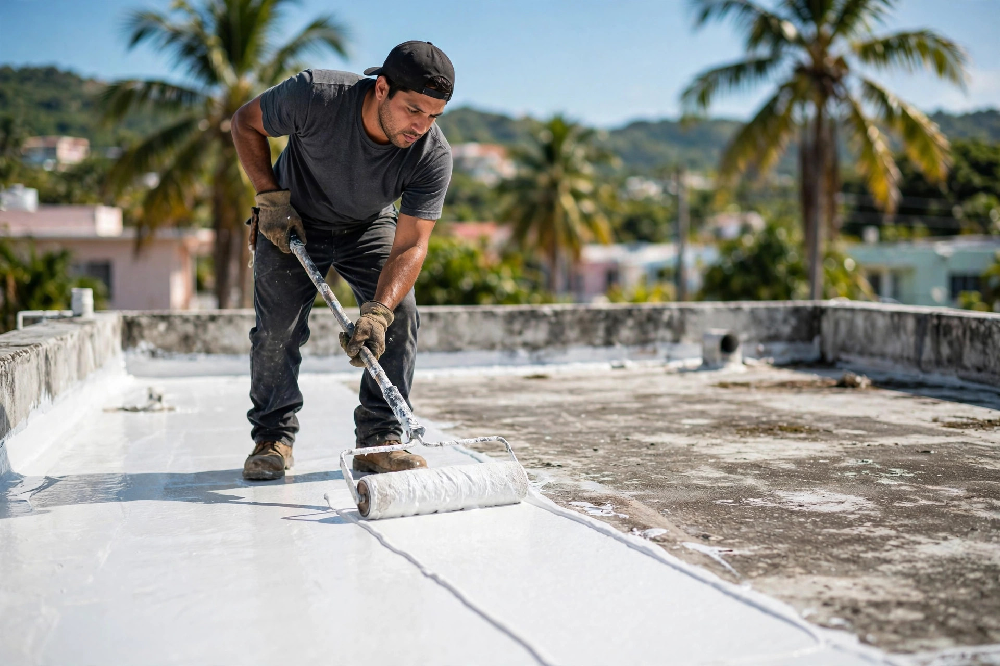
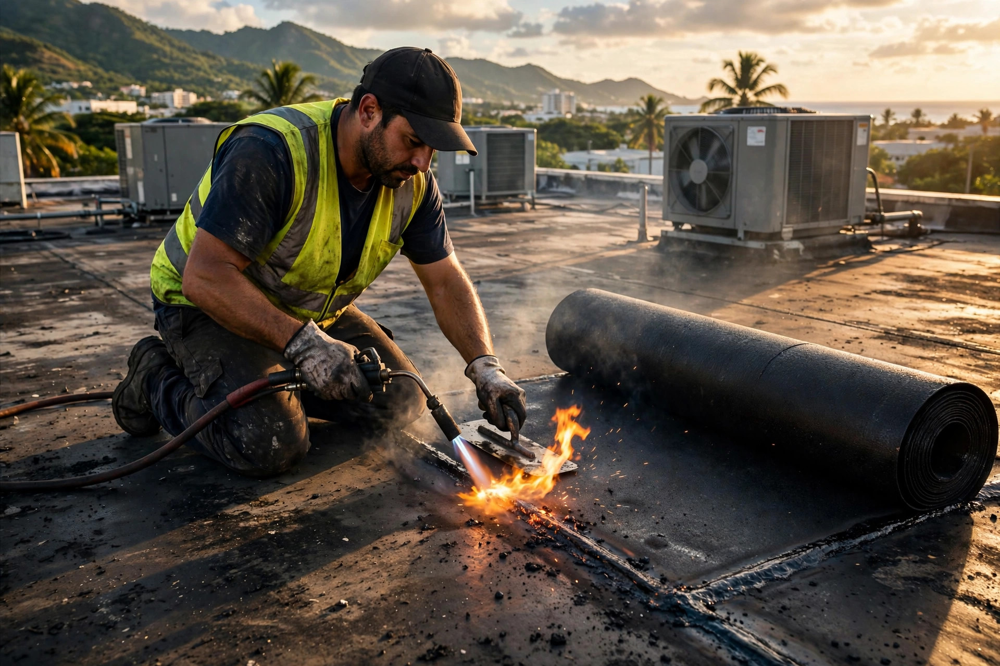
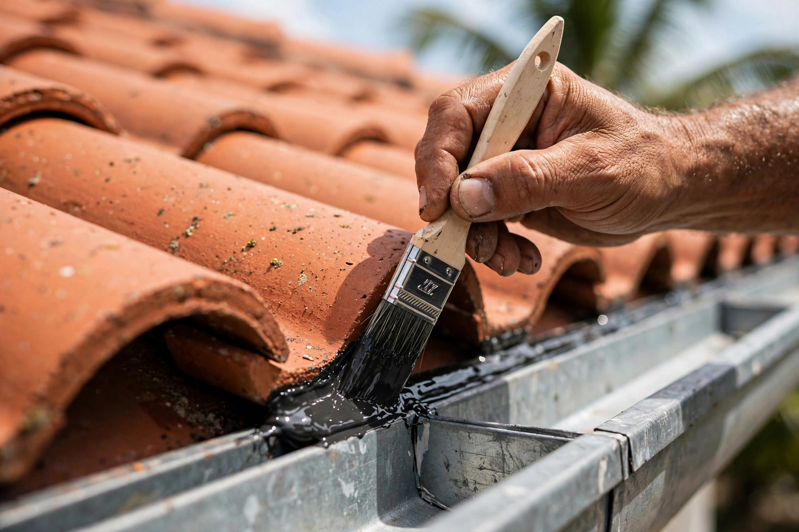
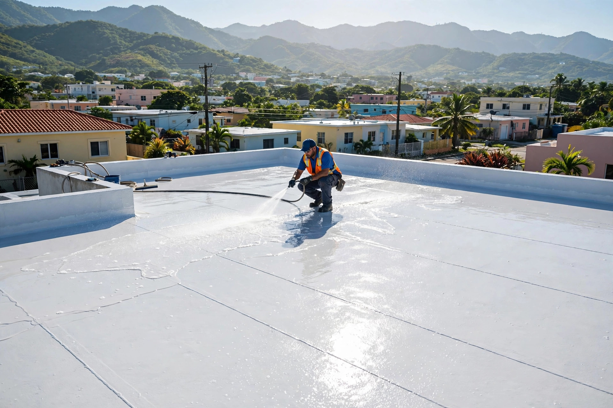

Techos residenciales
Tu casa protegida: filtraciones fuera, tranquilidad adentro.
Sellado profesional de techos residenciales y comerciales en Ponce. Membranas asfálticas y sellado líquido, con visita y estimado gratis.
Del techo, sin cuentos




Servicios
Tu casa protegida: filtraciones fuera, tranquilidad adentro.
Edificios y negocios del sur con sistemas de alto rendimiento.
Sistema en rollos para techos que exigen máxima impermeabilización.
Selladores elastoméricos que forman una capa continua sobre el techo.
Enfocados 100% en techos. Es lo único que hacemos, y lo hacemos bien: visita, diagnóstico y el sistema correcto para tu techo.
Nosotros
Somos Caprico Roofing, equipo de sellado de techos en Ponce, Puerto Rico. Trabajamos techos residenciales y comerciales con sistemas de membrana asfáltica y sellado líquido.
Cómo trabajamos
Inspeccionamos tu techo sin costo y sin compromiso.
Te decimos qué necesita y cuál sistema le toca.
Aplicación capa por capa, con atención al detalle.
Revisamos el trabajo contigo, punto por punto.
Preguntas frecuentes
¿Otra pregunta? Escríbenos por WhatsApp y te respondemos directo.
PreguntarEs la aplicación de un sistema impermeabilizante —membrana asfáltica o sellado líquido— sobre el techo para bloquear el agua y evitar filtraciones. Es la forma de proteger la estructura y la pintura de tu casa o negocio.
Manchas en el plafón, pintura que se ampolla o goteo en temporada de lluvia son señales claras. En la visita gratis inspeccionamos el techo y te decimos exactamente en qué estado está.
Depende del techo: la membrana es ideal para techos planos comerciales que exigen máxima impermeabilización; el sellado líquido forma una capa continua perfecta para techos con muchos detalles. Lo evaluamos en la visita.
Sí. Visitamos tu techo en Ponce, lo inspeccionamos y te damos el estimado sin costo y sin compromiso.
Por WhatsApp o llamando al 787-840-1835. Estamos en Ponce y cubrimos el área.
Ponce · Puerto Rico
Impulsa tu negocio
Una web profesional como esta para tu negocio. Precios de oferta por tiempo limitado.
$300 $99
$600 $150
La más elegida
$1,000 $200